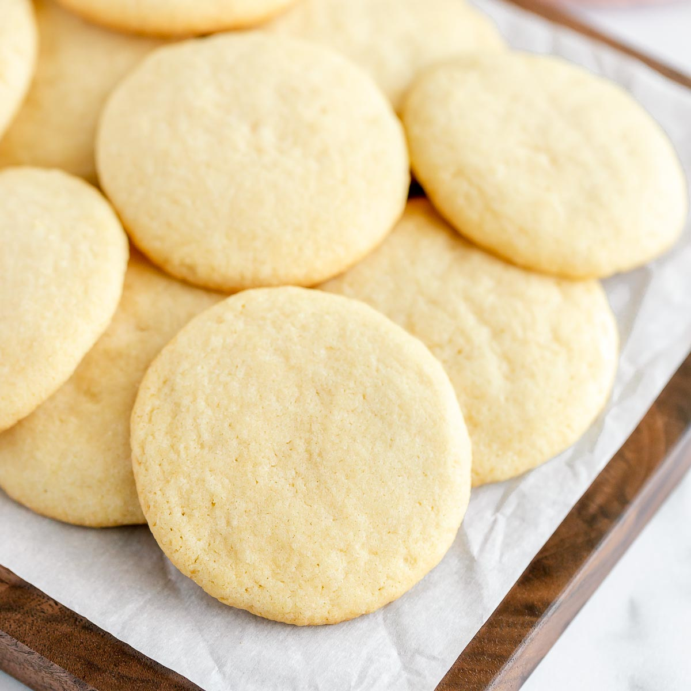

Ingredients
- 2 1/2 Cups sifted All-Purpose Flower
- 1 teaspoon baking powder
- 3/4 teaspoon salt
- 1 Cup granualted sugar
- 3/4 Cup butter (softened
- 2 Eggs
- 1 1/2 Teaspons vanilla Extract
Instructions
- In a small bowl, stir flower, baking powder and salt. Then, set aside
- In a large bowl, beat sugar and butter until creamy.
- Add eggs and vanilla extract and beat well.
- Slowly mix in flower mixture until well belended.
- Cover and chill for 1-2 hours
- Preheat oven to 375°F
- On a lightly flowered surface, roll one portion of dogh at a time to 1/8 in thickness
- Dip cookie cutters in flower and cut cookies
- Place cookies 1 inch apart on ungreased baking sheets
- Lightly sprinkle sugar before baking if not frosting cookies after baking
- Bake for 7 - 9 minutes or until edges are light brown
- Cool cookies on wire racks
